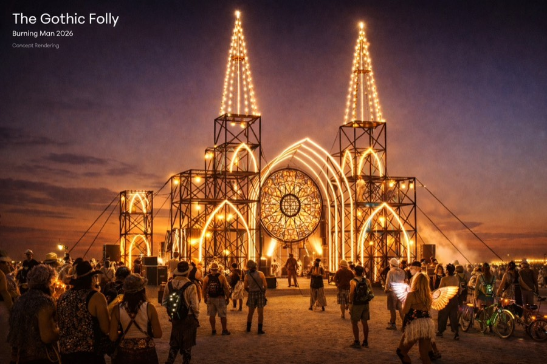
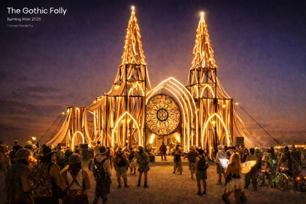
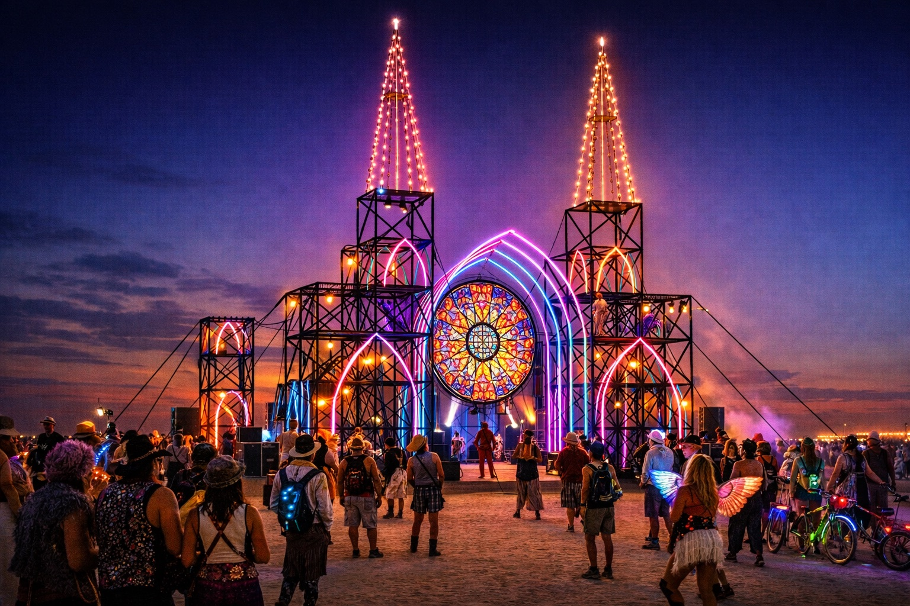
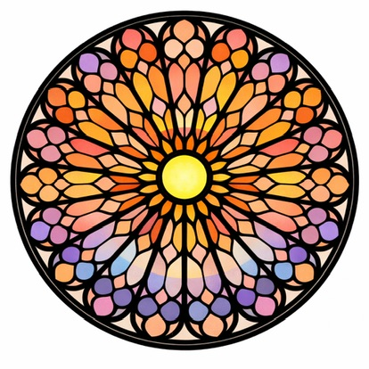

Black Rock City · 2026
A cathedral risen from the playa — open to all who wander beneath its arches.
Rising sixty feet from the deep playa, the Gothic Folly is a cathedral built from scaffolding and LEDs — a place for dancing, interactivity, and maybe even a playa wedding or two.
Inspired by the soaring arches and tracery of Gothic cathedrals, the Folly is part architecture, part sculpture, part communal gathering space. Its pointed arches frame the impossible blue of the Nevada sky. Its tracery casts shifting shadows across the cracked earth at golden hour. At night, it glows.
The Gothic Folly is not a building for any religion or creed — it is a space for wonder, for pause, for the kind of awe that only comes from standing inside something much larger than yourself.




Follow our progress on Instagram: @thegothicfolly
We need folks in NYC to fabricate, test, and program everything — and another group to set it up on the playa. Whether you're a metal fabricator, LED wizard, rigger, or someone who just shows up and makes things happen, there's a place for you here.
Help with metal fabrication, LED soldering, lighting programming, and our summer test build. You don't need to go to Burning Man to be part of this.
Arrive build week and help raise a 60-foot cathedral from the dust. Scaffolding, rigging, LEDs, MOOP, camp ops — all hands welcome.
Core playa builders can camp with us at Deli Art Support, adjacent to NYC Deli. Potable water, showers, private porto, camp kitchen, shade, power in every tent, and more — for roughly $450.
Questions? Reach us at thegothicfolly@gmail.com